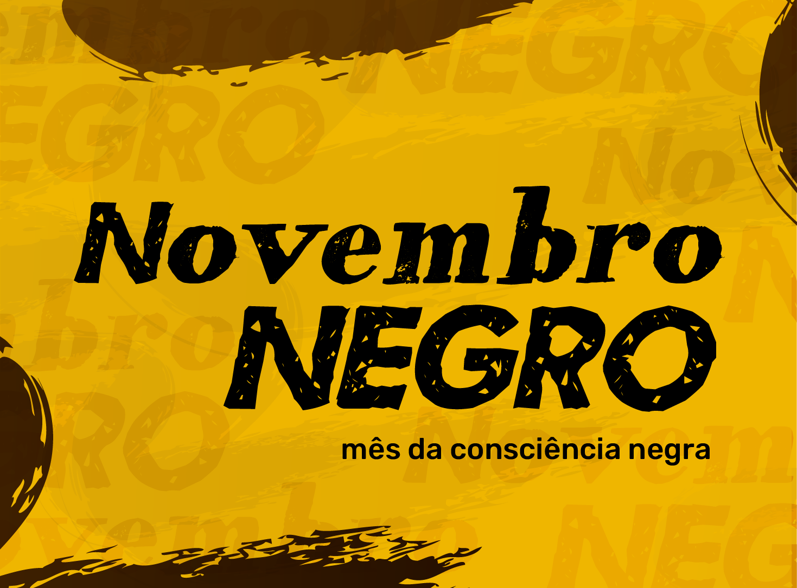
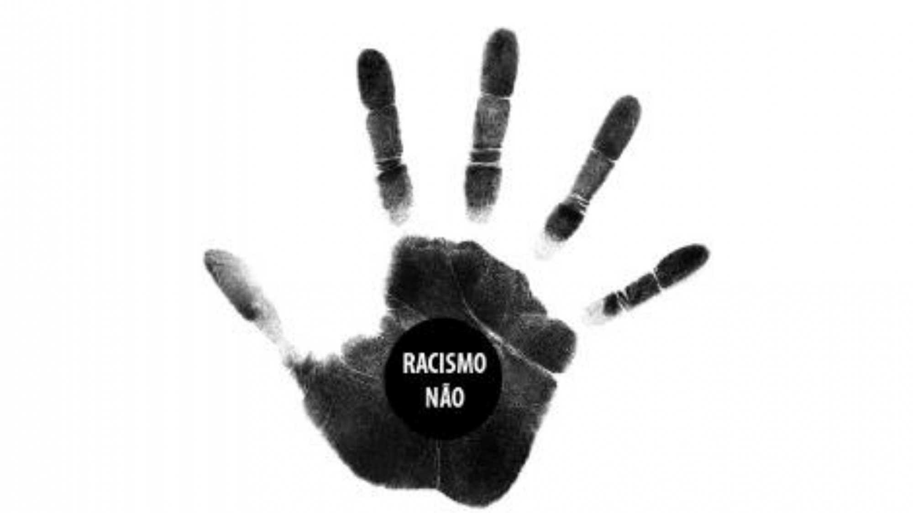
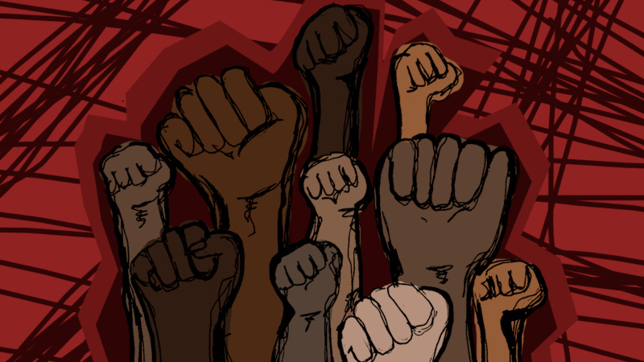

Novembro Negro: Contra o Racismo

Disponível em:https://ifrs.edu.br/rolante/acoes-integradas-do-novembro-negro-2/#gallery
Você já ouviu ou usou expressões como "cor de pele", "mercado negro" ou "inveja branca"? Apesar de comuns,
essas frases carregam raízes históricas ligadas ao racismo. Durante o Novembro Negro, a Secretaria de Direitos Humanos (SEDH)
promove ações para conscientizar sobre o impacto dessas palavras e incentivar a reflexão sobre a linguagem cotidiana.
A gerente de Promoção da Igualdade Racial da SEDH, Edineia Conceição de Oliveira, destaca que muitas dessas expressões são usadas
de forma automática, sem que se conheça o contexto histórico. “Essas frases são fruto de um racismo estrutural que ainda está muito
presente na sociedade. Por exemplo, ao dizer que algo "é uma coisa de preto" , há um reforço inconsciente da ideia de inferioridade
associada às pessoas negras. Mesmo sem intenção, o uso dessas expressões perpetua preconceitos”, ressalta.
Edineia também enfatiza que a conscientização é o primeiro passo para a mudança, mas aponta que o problema é complexo. “Alguns vão
refletir e deixar de usar essas expressões, mas outros continuam, muitas vezes por resistência ou por ignorar o impacto que causam.
A transformação efetiva só virá quando o racismo for amplamente reconhecido e tratado com seriedade, inclusive no âmbito legal,
como crime e não apenas como injúria racial”, conclui.
Repensar a linguagem é um ato de respeito e empatia. Que tal começar hoje?
O que é Racismo?
O racismo é uma forma de discriminação que se baseia na ideia de que existem hierarquias entre raças, atribuindo superioridade
a uns e inferioridade a outros. Essa mentalidade, profundamente enraizada na história e nas estruturas sociais, tem impactos
devastadores sobre as vidas e oportunidades de grupos racialmente marginalizados. Mais do que uma questão de atitudes individuais,
o racismo é um sistema que perpetua desigualdades, moldando instituições e relações sociais de maneira injusta.
Ele se manifesta de várias formas. No nível individual, ocorre quando pessoas expressam preconceitos ou atitudes discriminatórias,
como insultos ou exclusão deliberada. No nível institucional, aparece nas políticas e práticas de organizações que dificultam o
acesso a direitos básicos, como educação, emprego ou saúde, para determinados grupos. Já no nível estrutural, o racismo se revela
como um legado histórico que mantém privilégios para alguns enquanto restringe o avanço de outros, invisível aos olhos de muitos,
mas evidente nas estatísticas de desigualdade.
As consequências do racismo são profundas e amplas. Para quem o sofre, ele gera traumas, limitações econômicas e exclusão social.
Para a sociedade, representa a perpetuação da injustiça e a perda do potencial de milhões de pessoas que poderiam contribuir de
maneira plena se tivessem as mesmas oportunidades. Enfrentar o racismo exige mudanças em vários níveis: educar-se sobre o tema,
questionar preconceitos, revisar políticas públicas e, sobretudo, cultivar empatia e respeito.
Reconhecer o racismo em suas várias formas é o primeiro passo para combatê-lo. A luta por igualdade racial não é apenas de quem
sofre com o racismo, mas de toda a sociedade que busca um futuro mais justo, humano e solidário.

Disponível em: https://sencebrasil.redelivre.org.br/files/2015/03/racismo.jpg
Reflexões sobre Linguagem e Respeito
Explore como nossa linguagem cotidiana pode carregar preconceitos raciais e qual o impacto de cada uma dessas expressões.
1 - Mulata
Significado: Deriva da palavra "mula", que se refere a um
animal híbrido, usado historicamente para descrever mulheres negras de
pele clara ou mestiças. Essa expressão é herança de um tempo em que a
mestiçagem era vista como uma "mistura inferior".
Impacto: Desumaniza mulheres negras, reduzindo-as a produtos de
cruzamento, e reforça a fetichização sexual que historicamente as
afeta. É um termo carregado de conotações racistas e misóginas.
2 - Cabelo ruim
Significado: Descreve cabelos crespos ou afros como algo de má
qualidade ou indesejável. Surge da imposição de padrões eurocêntricos
de beleza, que consideram o liso superior.
Impacto: Diminui a autoestima de pessoas negras e promove a
ideia de que características naturais afrodescendentes são "defeitos".
Leva ao alisamento forçado e à rejeição da identidade.
3 - Cor de pele (para bege claro)
Significado: A expressão assume que "cor de pele" é
exclusivamente o bege claro, ignorando a diversidade de tons de pele
existentes.
Impacto: Exclui pessoas não brancas ao sugerir que apenas a
pele clara é a "normal". Isso reforça o apagamento da diversidade
racial e cultural, especialmente em itens como maquiagem ou lápis de
cor.
4 - Serviço de preto
Significado: Utilizada para descrever algo feito de maneira
errada ou malfeita. A origem do termo remonta ao período escravocrata,
em que o trabalho de pessoas negras era desvalorizado.
Impacto: Liga a identidade negra à incompetência, perpetuando
estereótipos racistas. Isso desvaloriza a capacidade de pessoas
negras, tanto historicamente quanto no presente.
5 - Denegriu a imagem
Significado: Expressão utilizada como sinônimo de "manchar" ou
"prejudicar" algo. Está diretamente relacionada à associação da cor
preta com o negativo.
Impacto: Reflete o racismo estrutural na linguagem, perpetuando
a ideia de que a cor preta é algo ruim ou sujo, enquanto o branco é
"puro".
6 - Lista negra
Significado: Refere-se a uma lista de pessoas ou coisas
proibidas ou indesejadas.
Impacto: Vincula o termo "negro" ao que é ruim, perigoso ou
negativo. Isso reforça uma associação racial pejorativa, mesmo quando
usado inconscientemente.
7 - Mercado negro
Significado:Designa o comércio ilegal ou clandestino. O termo
liga "negro" à ilegalidade, criminalidade e imoralidade.
Impacto: Essa associação contribui para o reforço de
preconceitos que criminalizam e desvalorizam pessoas negras.
8 - Preto de alma branca
Significado: Usada como elogio, insinuando que uma pessoa negra
possui características "positivas" normalmente atribuídas a
brancos.
Impacto: Sugere que virtudes como honestidade ou bondade não
pertencem naturalmente a pessoas negras, reforçando estereótipos de
inferioridade.
9 - Inveja branca
Significado: Refere-se a um tipo de inveja considerada
inofensiva, "boa" ou "pura".
Impacto: Sugere que o "branco" é sempre positivo, puro e
desejável, enquanto o "preto" é associado ao oposto. Isso reforça a
ideia de superioridade racial.
10 - A coisa tá preta
Significado: Expressão usada para descrever uma situação
difícil ou perigosa.
Impacto: Reforça a associação da cor preta com coisas
negativas, contribuindo para a desvalorização da negritude.
11 - Não sou tuas negas
Significado: Usada para negar um comportamento desrespeitoso,
partindo da ideia de que mulheres negras são tratadas com menos
respeito.
Impacto: Reforça o estereótipo de que mulheres negras são
desvalorizadas, normalizando a desigualdade de gênero e raça.
12 - Negro de carteirinha
Significado: Utilizado para deslegitimar a identidade racial de
pessoas negras ou pardas.
Impacto: Minimiza as lutas por reconhecimento e nega as
vivências raciais de pessoas negras, sugerindo que sua identidade é
"de fachada".
13 - Crespo é moda
Significado: Sugere que cabelos crespos ou afros são apenas uma
tendência passageira e não uma expressão de identidade.
Impacto: Ignora o significado cultural e político do cabelo
crespo como símbolo de resistência e pertencimento.
14 - Criado mudo
Significado: Nome do móvel usado ao lado da cama, com origem na
ideia de escravizados que serviam em silêncio.
Impacto: Reforça a desumanização e objetificação dos
escravizados, perpetuando uma memória colonialista.
15 - Negro bom é negro morto
Significado: Frase de ódio ligada ao genocídio da população
negra, usada para justificar violência racial.
Impacto: Alimenta discursos de ódio e promove o racismo
estrutural que resulta em mortes de pessoas negras.
REFLEXÃO
A linguagem que usamos reflete nossos valores e crenças. Muitas expressões que fazem parte do dia a dia têm origens racistas, perpetuando preconceitos de forma inconsciente. Conscientize-se: revise o que você fala, busque entender a história por trás das palavras e substitua expressões ofensivas por alternativas respeitosas. Pequenas mudanças no vocabulário podem gerar um impacto positivo, contribuindo para uma sociedade mais justa e inclusiva.
